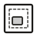
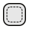
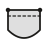

1. 겹침 정돈
지금 favicon을 같은 간격 대각선으로 정리. 가장 안전한 안
16 · 32 · 128px. 아래 검은 칸은 다크 배경(색 반전) 확인용이에요. 16px에서 무엇인지 알아보이는지가 1차 기준이에요.
지금 favicon을 같은 간격 대각선으로 정리. 가장 안전한 안
한쪽 모서리가 접힌 판. fold를 가장 직접 보여줌

위에서 본 방(벽 + 점선 바닥)과 반투명 물건 하나
네모(방)와 원(파일)이 겹치는 자리가 짙어짐
띠를 접어 만든 F. 워드마크와 이어 쓰기 좋음

둥근 천에 점선 바느질. 서도호 천 작업에 가장 가까움
뚜껑이 열린 정리 상자. 주간 정리 기능을 상징
전시장 입구 같은 아치 안에 물건 하나
세 번 접힌 띠. 접힘의 리듬이 가장 잘 보임

손대지 않으면 처지는 오브제. 앱의 규칙을 그대로